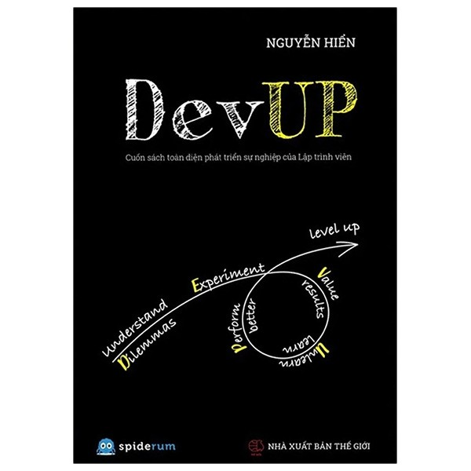

Là một cuốn sách rào đầu với ý tưởng giúp trả lời những câu hỏi khó của đời lập trình viên "bình thường":
cuốn sách toàn diện phát triển sự nghiệp của Lập trình viên.
nhưng sách đưa ra nhiều câu hỏi hơn là trả lời.

PS: tại sao chữ L viết to?
Khi đưa ra 2 lựa chọn để tạo thế lưỡng nan (dilemma), tác giả chẳng chọn cái nào cả, và thường thì những đoạn dài dòng văn tự có thể chốt lại bằng 1 chữ "tùy".
Nếu bạn đọc sách đề tìm câu trả lời, tôi nghĩ cuốn sách đã "fail" bạn. Nếu bạn đọc để "biết thứ mình không biết", hay do FOMO (fear of missing out - sợ không biết về 1 cái gì đó mà người khác biết), hay đơn giản là sách được tặng mà có một ngày thật rảnh, then read on.
Đây là phần khiến quyển sách này được thêm 1 sao trong đánh giá, đội design đã làm rất tốt khi tạo 1 trang bìa màu đen (như background editor / IDE của các lập trình viên hay quen mắt), một chữ tiêu đề bằng tiếng Anh thật to cho sang, thêm 1 hình vẽ mang linh hồn của cuốn sách - tất nhiên cũng bằng tiếng Anh, khiến lập trình viên nhìn vào tỷ lệ sẽ mua là 86.9%.
Với ý tưởng "level up developer", tác giả phát minh ra một thuật ngữ mới bằng việc ghép 5 chữ đầu của: - (understand) Dilemmas - Experiment - Perform better - Unlearn - Value
Tôi vốn không phải fan của mấy trò thuật ngữ và ghép chữ này, nhưng nếu đến từ background code OOP (Java/C#), dễ hiểu bạn quen với SOLID hay những kiểu gò chữ như vậy.
Làm quản lý, hay làm "doanh nghiệp", sẽ khiến bạn dần quen với việc viết như vậy: SMART, IDEAL, 4C, 3C1O... nghe rất oách, vã rõ là những người "thông minh", "chuyên nghiệp" sẽ làm vậy.
Tôi không thể nào cãi được, vì đâu có gì để dựa vào? Well, thế giới có Elon Musk và cần nhiều hơn những người như thế: Xin giới thiệu: ASS https://gist.github.com/klaaspieter/12cd68f54bb71a3940eae5cdd4ea1764
Dù không thích cuốn sách này, đây là một tín hiệu đáng mừng cho ngành công nghệ Việt Nam, sau số lượng sách tech ít ỏi được xuất bản, với sự thành công của một cuốn sách dở như DevUp, tương lai chúng ta sẽ có hẳn ngành xuất bản công nghệ đầy hy vọng.
Quote chính cuốn sách 1 dòng tôi đồng ý:
Sau cùng, lượng phải đủ nhiều thì chất mới được chuyển hóa (p89).
Cuốn sách 204 trang với mức giá 149.000 đồng là mức giá rất hợp thời vàng lên, đô cũng lên, hay noi ngắn ra là: đắt.
Nhét đầy hình ảnh lấy trên mạng hay những hình vẽ vô giá trị công thêm các trang "CỐ TÌNH ĐỂ TRẮNG" để mời bạn viết tiếp.
Khi ai đó từng nói: "một hình ảnh quý bằng cả ngàn lời", câu đấy đúng nghiã đen ở đây, mỗi hình ảnh trong cuốn sách đáng giá vài ngàn đồng.
Những trick này có thể là chủ ý để tăng số trang, có thể là vô tình?
Đây cũng là một cuốn sách khiến tôi kinh ngạc về tốc độ đọc của chính bản thân mình, có thể finish 72 trang (hết phần Dilemma) trong vỏn vẹn 1 tiếng. Nội dung thực sự, bắt đầu từ trang 19.
Mở đầu cuốn sách là 5 trang review của những nhân vật được pick theo thuật toán random của Java? Tôi hầu hết không quen ai, nhưng đến khi thấy 1 cái tên, thì tôi chỉ biết hmmmmm và chữ m kéo dàiiiiiiiiii.
149.000 là mức giá rất thức thời. Các bạn nếu đã đủ quen với chuyện giá 999.000, đây cũng là một marketing trick để đánh lừa người dùng với mức giá thật là 150.000, mà theo các nghiên cứu kinh tế, sẽ khiến người dùng thấy rẻ hơn.
150.000 cũng vừa đủ đắt để các lập trình viên cảm thấy quý, giá. Có thể bạn chưa biết, nhưng nếu bán với mức giá đúng 50.000 đồng, sẽ chả ai mua cuốn sách này cả. Dân ta vốn đã ăn sâu tư tưởng: của rẻ là của ôi, nên ngày nay sinh ra "biến tướng" của đắt... cũng vẫn ôi như thường.
Tôi không biết "Nguyễn Hiển" là ai, và cũng không định biết cho đến khi đọc hết và vào xem linkedin của anh. Tôi muốn mình đánh giá cuốn sách theo nội dung của nó, chứ không phải do "tác giả là ai". Cũng giống như bài viết này, nó "anonymous" vì tôi muốn bạn đánh giá nó bằng nội dung, chứ không phải vì tôi là ai.
Tôi nghĩ mình KHÔNG phải trong nhóm "ai không nên đọc cuốn sách này". Bởi tôi không phải là "LTV siêu hạng và những LTV đi-theo-đường-thẳng".
Tôi chả có giải thưởng nào, chứng chỉ bằng cấp cũng gần như không, mà mang so với 3 chuyên gia (David Heinemeisr Handsson tôi không biết là ai), nhưng Linus & James Gosling, thì rõ ràng là một trò đùa. Vậy tôi thuộc loại "được việc", hoặc "chuyên gia", chứ đi làm hơn chục năm cho công ty nước ngoài mà "non nớt" thì cũng không phải.
Những "anecdata" nhặt nhạnh rồi viết vào không đủ mang tính thuyết phục cho hầu hết các lời khuyên. Những ví dụ "tôi từng gặp" đầy sự chủ quan và rơi vào bẫy "sample bias" trong ngành thống kê. (ý kiến được tạo nên do những gì chủ thể quan sát thấy vài nghĩ đó là tất cả).
khi đọc được nửa, tôi đã đoán được đoạn sau sẽ nhắc tới Netscape, có thể do tác giả đủ "già" để biết chuyện, hoặc cùng đọc từ Joel On Software như tôi https://www.joelonsoftware.com/2000/04/06/things-you-should-never-do-part-i/
Tôi nên chuyển sang viết sách, thay vì viết blog!
Chụp ảnh tweet rồi đóng thành sách bán? Có lẽ tôi đã không đọc sách tiếng Việt quá lâu.
Là người học hàng chục ngôn ngữ lập trình khác nhau, bao gồm cả những hàng lạ như Racket, Ocaml hay ELM, tôi nghĩ mình không phải đối tượng của cuốn sách, nhưng là những lời khuyên Ok cho các newbie.
Hành động có chủ đích là tất cả. p96
Với giọng điệu, tôi đoán tác giả là 1 high-level manager, âu chuyện muốn xây dựng 1 đội quân "worker" chất lượng, là chuyện dễ hiểu.
Tác giả rất thành công khi chính mình thể hiện "experiment", đã xuất bản cuốn sách này.
Đừng để mình bị lạc trong mê cung của những thế lưỡng nan. Đừng suy nghĩ quá nhiều, hãy hành động. p96.
Tôi thích trang 97 với dòng quote của Kent Beck. Không phải chỉ vì nội dung của nó, mà vì câu chuyện liên quan: Kent Beck là người phát minh ra "TDD", khi ông vào làm tại Facebook, code của Facebook hông có test, ông đã học được rằng "TDD" không phải cách test tốt tại Facebook, RẤT, ĐẮNG, CAY.
https://softwareengineeringdaily.com/2020/12/10/facebook-engineering-process-with-kent-beck-repeat/
Well, vậy là đã hết nửa quyển sách. (yey, 2 trang "Cùng viết tiếp" và 1 trang hình to đùng cho "Valuation"
Phần này tôi đồng ý với tác giả, về chuyện số năm kinh nghiệm không phải thước đo sự "senior".
Việc lặp lại lý thuyết 10000 giờ của
Outliers: The Story of Success by Malcolm Gladwell
hay nhắc tới "deliberate practice" của
Deep Work - Rules for Focused Success in a Distracted World by Cal Newport
không có gì là mới mẻ với tôi / thế giới. Việc viết như 1 sự thật: "để được coi là senior của một ngành, nhân sự cần khoảng 10000 giờ thực hành có chủ đích, tương đương với 5 năm kinh nghiệm" không hề có bằng chứng, không trích/dẫn tới 2 sản phẩm nói trên, khiến nó kém thuyết phục, lẫn không giúp "dev Việt" khá hơn. Nếu bạn nói "ôi dào, cần gì dẫn", thì cuối sách lại có link tới vài trang web kèm QR code, để chiếm đủ 1 trang.
Việc in 2 matrix competence không rõ có đúng luật bản quyền không, nhưng rõ ràng giúp chiếm hết trang 105-122. Amazing, gút chóp, 2 đường link thừa đủ để tiết kiệm giấy cho trái đất.
https://about.gitlab.com/handbook/engineering/career-development/matrix/engineering/development/senior/
Vì trong sách nói đến ROI nên tôi áp dụng luôn, tôi được gì khi viết bài này? một cái ROI âm, tức là lỗ. Tôi mất tiền (nếu mua sách), mất thời gian đọc, viết review và không thu về gì cả. Nhưng để làm gì? Để giúp cho cộng đồng có cái nhìn đa chiều hơn về 1 cuốn sách thay vì những bài báo PR tung hô. Nhớ rằng báo chí ngày nay, bạn phải trả tiền để người ta viết bài khen/chê một sản phẩm.
360 review là thứ khiến tôi căm ghét một phần công việc của mình. Các công ty công nghệ đua nhau học theo FAANG (Facebook, Apple, Amazon, Netflix, Google) làm 360 review với lý do: vì FAANG làm thế.
360 review không thực sữ hữu ích như những gì nó hứa hẹn, đây là vài lý do: - mỗi kì performance review, cả công ty mất mỗi NHÂN VIÊN ít nhất 1 ngày để viết review. Nhân con số đó lên với số nhân viên. Chưa kể manager sẽ mất nhiều thời gian hơn nữa. - tỷ lệ giá trị giữa đánh giá của manager và của các "peer": nếu 50-50, có thể còn có chút cân đôi, nhưng có công ty dùng 25 peer - 75 manager, tức việc bạn nên làm lúc đó: là làm thân với manager. - 360 thúc đẩy những trò gaming metrics (data driven), giúp đồng nghiệp giải quyết vấn đề? viết document cho code? những thứ đó không phải những con số tốt để show ra khi đến kỳ performance review. - good luck nếu chuyển team hay manager chuyển team/nghỉ.
Có cách nào tốt hơn không? tôi không biết, nhưng 360 không phải một giải pháp tốt trong mắt tôi.
Tôi không rõ tác giả không hiểu, hay cố tình không hiểu?
Thứ người ta nói độ tuổi của dev chỉ tới 40, không phải nói về chuyện sức khỏe. Ở Việt Nam có cái tư tưởng: nhiều tuổi thì code không theo kịp bọn trẻ, qua 30 phải lên làm manager không sẽ coi là thất bại.
Tư tưởng này hoàn toàn lạc hậu, trên cơ sở của các "định kiến cũ".
Nhìn sang tây, rõ ràng các chuyên gia, đều ngoài 40: Linus Torvarld, Guido van Rossum, Rob Pike, etc... và vẫn làm việc ấy cho tới khi họ chết.
Trước đây, luôn có suy nghĩ con đường thăng tiến luôn phải lên làm quản lý, làm sếp, và đó là con đường duy nhất, thì ngày nay, các công ty đã có career ladder cho các IC (individual contributor) thay vì lên làm quản lý, họ vẫn code, vẫn đóng góp về mặt kỹ thuật, thay vì quản lý người.
Quy luật "giỏi lên làm quản lý", dính phải vấn đề gọi là Peter principle.
https://en.wikipedia.org/wiki/Peter_principle
Ngắn gọn, khi một người được "thăng chức", họ chuyển từ trạng thái "rất giỏi" công việc cũ (viết code), lên một công việc mới (quản lý người), và rõ ràng những người giỏi code, chẳng có lý do gì để giỏi quản lý người cả. Hậu quả là một manager từng code giỏi Java, thuộc lòng các design pattern, các SOLID principle... lên quản lý 1 team code Python, sẽ thất bại rực rỡ.
Khá lan man và giống như 1 quyển self-help bán đầy trong hiệu sách.
DevUP có phải cuốn sách "toàn diện phát triển sự nghiệp của Lập trình viên" không?
Theo nghĩa nào đó, có, bởi nó chạm tới mọi lĩnh vực, góc cạnh từ chuyện làm vì lương hay đam mê, tới clean code, tới hôi nách, tới chuyện ế bạn gáí.
Có tác dụng không? với một lập trình viên như tôi thì không. Các luận điểm thiếu tính thuyết phục, còn rất nông, chỉ đưa ra chứ không giải quyết, hỏi nhiều hơn là trả lời. Với các lập trình viên 1 2 3 năm kinh nghiệm, có thể có, có thể ở Việt Nam, chuyện như competence matrix chưa phổ biến, cuốn sách giúp người đọc biết tới những thứ như vậy. Với các nhà quản lý/ lãnh đạo: có thể có ích để họ hiểu về dev hơn.
ROI: có đáng tiền không?
với tôi thì không, tôi sẽ mua 2 vé rồi đi xem Godzilla vs. Kong chắc sẽ vui, khỏe, có ích hơn.
Peace!
2021/04/09